Kitchen
Bright and highly functional family kitchen with great storage, durable finishes, and strong lighting. Family loves to cook, and we typically have about 3 people in the kitchen at the same time, so it needs to feel comfortable for multiple people working together.
Needs
November 8 owner-approved Sub-Zero upgrade: move the short gray kids-room return 15 inches west, from x = 29 to 27.75 ft, while retaining its north-wall centerline z = 24.7367 ft. This gains 12 inches for the wider appliances plus a separate 3-inch fridge-side filler. Kitchen and kids flooring, wall backing, panelling and retained toy storage follow. The long cooking/prep/mudroom wall stays x = 37.5; both kitchen passages, kids doorway, stairs, island and garage partition stay fixed. Preserve the oven bay size and mounting height. Structural, product and occupied-circulation review remains required.
Kitchen sink facing the windows.
Prep kitchen (countertop and sink) + pantry combined.
Both joined counter-window banks now have two 3.5-inch-wide, six-inch-deep full-height white shade-bay joint covers. Keep unequal casement / picture / casement sections, shared headers and continuous sills; main sink bottom casing stays omitted. Openings, sill/head heights, plants and cabinetry stay fixed. Shade/crank clearance, mounting, factory joining, headers and wet-area sealing require review.
Plenty of outlets for small appliances.
Canned lights with diffusing cover.
Undercabinet lighting.
Durable, easy-to-clean surfaces and finishes.
Lots of deep drawers instead of lower cabinets with doors.
Pull-out cabinet for trash + recycling immediately to the left of the sink.
Dishwasher immediately to the right of the sink.
Compact dish rack on the counter right of the main sink, above the dishwasher: stainless-look wire frame and a neutral removable 16 × 14-inch catch pan with raised edges. No drain spout; remove the pan and empty water manually. Keep the faucet and soap dispenser clear; confirm actual dimensions, pan removal, and cleaning access before purchase.
Vertical tray storage for cutting boards and baking sheets.
Soft-close doors and drawers.
Cabinets to the ceiling.
Engineered wood flooring to match the rest of the main level.
Approximately 36-inch farmhouse/apron-front sink with unequal double basins: prefer 30/70 or similar, never 50/50. Use a smaller left bowl and larger right bowl in the concept, with a low divider.
Under-sink storage solution for sponges, cleaning supplies, etc.
Island seating: exactly four 18-inch-wide dark-frame stools with brown seats and wood backs, in one hall-side row with no end stools. Lengthen the island to 8 feet and use 24-inch stool centers instead of 20 inches. This gives 6-inch gaps between nominal seats; verify the selected stools and occupied circulation.
Built-in soap dispenser beside the main faucet. The preview shows one pump; retain the original provision for a second hand/dish-soap dispenser when coordinating the final countertop hole layout. Do not pre-drill before selecting the sink and fixtures.
Deep pull-out drawer for plastic containers.
Deep pull-out drawers for plates and bowls.
36-inch induction cooktop.
Sub-Zero 36-inch Classic refrigerator CL3650R/S and matching 36-inch Classic freezer CL3650F/S, stainless steel with top grilles. Facing the bottom wall from the kitchen: freezer left, unchanged oven/storage tower in the middle, refrigerator right. Opposite hinges put both handles toward the tower. The model uses tubular-handle variants CL3650F/S/T/L and CL3650R/S/T/R; handle style is provisional. Fit the supplied 90-degree stops at both close side walls. Confirm cabinetry, grilles/service access, supports/anti-tip anchorage, services, handing and drawer removal with the installer.
Microwave and/or air fryer.
Separate hot and cold drinking/filtered-water dispenser beside the main sink faucet, not cold-only. Coordinate the filter, hot-water tank, power, plumbing, and under-sink storage.
Will need a large electrical panel capacity to accommodate appliances running.
Second sink somewhere (like prep kitchen)
Water leak sensor.
Wants
Windows in the prep kitchen
Paper towel holder inside a cabinet
Might have to prep range for gas in case of resale.
Prefer warm wood style kitchen
Drawer with power outlets for phones, tablets, laptops.
Instant drinkable hot water dispenser.
Oversized dishwasher.
Storage on both sides of the island.
At the prep window, the quartz backsplash is notched around the flat bottom casing rather than occupying the same space. Its outside envelope and countertop finish remain; verify sealed trim/quartz joints and moisture-resistant painted stock before fabrication.
Confirmed layout
Sink-window lower trim removal - October 27: omit the applied flat white bottom casing board beneath the main kitchen picture-window sill. Retain the recessed 54 × 6 × 1-inch white sill, plants, side casing, header, window frame and faucet deck. Quartz wall finish remains visible below the sill instead of a horizontal applied trim strip. Other windows, prep trim and the farmhouse sink apron stay unchanged. Verify sealed wet-area finish joints before installation.
Kitchen lighting and Night mode
Latest flush/open shelf correction: off-white 18 × 12-inch towers meet the actual outer wall and kitchen cabinet edges without reveal gaps. Natural oak shelf backs add contrast; room-wall panels stay white. Standard 84/24-inch modules replace the closed top spacer with a supported open compartment, 22.2 inches clear beneath a flush 1.8-inch cap. Total top remains 108 inches, aligned with the kitchen cornice. A separate rear scribe closes the unpanelled junction. Twelve Night/Day task beams remain; piano stays beside stairs. Upper access, load/anti-tip anchorage and electrical work need approval. Earlier spacer/outer-scribe layout below is superseded.
Latest off-white shelves — November 9: two 18 × 12-inch towers use stacked standard 84/18-inch modules plus separate scribes and 6-inch top frieze/cornice. Their total 108-inch top matches the actual adjacent refrigeration cornice. Twelve shielded shelf task beams follow kitchen Day/Night; books, purchased baskets and saucered plants sit on actual supports. Narrow the black-glass/cork board to 60 × 48 inches to fit, keeping 30-inch bottom and the 45-inch gold picture light. Piano remains beside stairs. Appliances/openings stay fixed; loads, anchorage, safe reach and wiring require review. This supersedes the empty-wall direction below.
November 9 owner redirect: leave the straight kids north wall empty except its warm-white panels and original 84 × 48-inch black tempered dry-erase/cork board, clipped papers and 45-inch gold light. No shelf towers, accessories or shelf lighting remain. Piano/bench/task lamp return to their prior stair-enclosure location. Board bottom/top return to 30/78 inches and light to 85.2 inches; kitchen appliances and openings remain fixed. Verify glass fixing, reach and electrical installation.
Start with four warm, dimmable 4-inch regressed/baffled recessed lights, not a dense ceiling grid. Place one for the sink zone, two along the cooking-side work aisle and one at the refrigeration approach. Retain the two island pendants and actual downward task light beneath them. Two concealed, diffused strips beneath the hood-side upper cabinets wash the counter; the hood also has a working task beam. The sink-wall cabinets and their strips stay removed; restore two ivory fabric-shade/brass wall sconces beside the wide sink windows, with actual accent lights and shade glow following Night/Day. Verify listed wet-area suitability, electrical layout and actual task illumination with the electrician.
In the viewer, Night lighting switches these sources on and automatically checks Island lights; Day switches the practical sources off and restores the previous daytime pendant-visibility choice. Reload defaults to Day with Night lighting off; selecting Night shows and energizes the island pendants. Front inspection views hide foreground pendants/ceiling hardware for clarity; task illumination remains and normal views restore the hardware. No extra controls or status panels are added.
Use a warm 3000 K, high-CRI (90+) design direction, small apertures, regressed light sources, diffusers and separate dimming for ambient, pendants and task layers. Four cans are a starting study, not a calculated minimum or selected product. This follows Cooper Lighting's layered-lighting guidance; RAB's baffled 4-inch retrofit range illustrates the fixture type, not a purchase selection. Final output/beam spacing must use selected IES photometry, cabinet/pendant dimensions and dimmer/driver compatibility. Check reflected glare on quartz and glass from seated/standing eye positions rather than adding more bright cans.
The adjacent family message board retains one shielded 45-inch picture-light concept, with soft downward beams in Night mode. The November 9 redirect restores board bottom/top 30/78 inches and light about 85.2 inches; the piano no longer sits below it. Appliances and cabinetry stay fixed. Aim/dim against a physical mock-up to avoid reflected hotspots; verify fixing, electrical feed, headroom, reach and product clearances. Preview brightness is illustrative, not photometric or glare certification.
October 27 revision: 30-inch passages and larger cooking cabinets
Seasoning bay - right when facing the cooktop: use the mudroom-side hood-flanking upper (27 W × 12 D inches, lower tier 36 inches high) for two removable IKEA VARIERA 105.361.57 turntables. IKEA lists 26 cm diameter × 4 cm high (10.236 × 1.575 inches), powder-coated galvanized steel trays with plastic bases, white finish and 5 kg maximum load each; these are metal, not wood or stainless steel. Official dimensions/materials checked October 27, 2026; regional availability still needs checking. Each tray holds seven representative 2.16-inch-diameter spice jars; the middle compartment holds eight individually labeled, rarely used spices. Cups and mugs move to the left/prep-side upper; quantities, shelf heights, spare upper compartments and cabinet dimensions stay unchanged. Lower pull-outs do not move.
Modeled 3/4-inch sides/back leave 25.5 inches clear width and 11.25 inches back-to-opening depth. Two full circular envelopes have a 1.524-inch gap, 1.752 inches at each side, 0.832 inch behind and 0.582 inch before the opening. The existing narrower adjustable shelf supports the middle jars; the trays rest on the full cabinet floor. Jar tops clear the first shelf underside by 7.005 inches; middle jars clear the next shelf by 8.52 inches. The trays are fixed in the cabinet during door operation, not attached to its doors. Rotation is represented by circular envelopes, not a new viewer control. Actual selected hinges, door opening/retrieval, loaded rotation, shelf capacity, safe reach and cooktop heat exposure require product/site review; hinges are not manufacturer CAD. The photo crop does not identify a side; prep-side is the implementation assumption.
Cutting-board pull-out: use the top drawer of the prep-side 27-inch cooking base, beside the spice pull-out, for a removable 22 × 14 × 3/4-inch wooden cutting board. Click the drawer to extend it 18 inches, carrying the board; click again to close. Finger-grip indications make removal readable. Lift the board onto the counter for cutting: the modeled drawer is storage/retrieval, not an approved cantilevered chopping surface. Confirm food-safe material, cleanability, drying access and loaded slide capacity. Other cooking drawers retain utensils and cookware; island dishes and both vertical board/tray organizers stay unchanged. No cabinet width, countertop or opening changes.
Mudroom approach limitation: the garage door's retained parked-open pose places its lever beyond the mudroom wall face and into the approach beside the passage. The 30-inch dimension describes the finished wall opening, not an unobstructed accessible route with that door parked open. Coordinate actual garage-door hardware/operation and occupied access with the designer; the model does not move that door or establish clearance approval.
Current owner selection supersedes the earlier 36-inch opening study below: both circled passages are now 30 inches finished clear, remain doorless and retain 96-inch heads. Keep the outer jambs fixed; move the two cooking-side jambs back 6 inches each. Prep spans z = 9.725-12.225 ft and mudroom z = 21.675-24.175 ft. Both the shared floor plan and furnished model follow these dimensions. Actual rough framing must allow separately for lining and finishes; 30-inch circulation and accessibility require professional review.
The cooking counter increases from 94.15 to 106.15 inches, with unchanged 25 1/2-inch depth and 36.6-inch finished height. The common-size base sequence is 6-inch spice pull-out + 27-inch drawer base + 36-inch cooktop base + 27-inch drawer base + 6-inch board/tray pull-out, plus equal 2.075-inch end fillers. Both side drawer bases gain 6 inches. Hood-side upper stacks also gain 6 inches to 27 inches wide, with paired doors on each 36 + 15-inch-high tier. Drawers, shelves, task-light strips and stored contents follow the wider boxes. Retain the centered cooktop/hood, island, appliances, sink, three drawer banks and both narrow pull-outs. Leave the recently shifted mudroom basket tower in place; no additional storage or room enlargement is needed. Verify cooktop/top-drawer compatibility, loaded slides, cabinet selection and occupied access.
Earlier 36-inch passage study - superseded October 27
The October 25 study used 36 inches finished clear and 96 inches high, with no doors, tracks or thresholds. Its former openings at z = 9.725-12.725 and 21.175-24.175 were superseded by the current 30-inch clear passages at fixed world positions z = 9.725-12.225 and 21.675-24.175. Casings stay outside the clear rectangles; the builder must derive rough openings from selected jamb/finish thickness and site tolerances, not assume clear width equals rough width.
Keep the outer jambs fixed beside sink/prep cabinetry and refrigeration. Each inner jamb moves 6 inches toward cooking, preserving the cooktop/hood centerline. The counter shortens 106.15 to 94.15 inches. Retain the centered 36-inch cooktop base and both 6-inch pull-outs; side drawer bases and hood-side upper stacks reduce from 27 to 21 inches each. End fillers remain 2.075 inches each. Counter depth, height, sink, island, seating, appliances and 48-inch hood remain unchanged. Shift the mudroom basket tower 1 1/2 inches north, retaining ten baskets, and shorten its connecting return to clear the projecting casing cap. Verify headers/structure, services and occupied circulation before construction.
Common-size cabinets on the cooking wall
Current common nominal bases, prep toward mudroom: 6-inch spice pull-out + 27-inch drawer base + 36-inch cooktop base + 27-inch drawer base + 6-inch board/tray pull-out. Boxes total 102 inches within the 106.15-inch counter run, with equal 2.075-inch fitted end fillers. Bases retain 24-inch depth, 34 1/2-inch height and a 4-inch recessed toe. The 21-inch version below belongs to the superseded 36-inch passage study.
Full-overlay front reveals target 1/8 inch. Drawer stacks have one 5 1/2-inch-high utensil front above two 12 1/4-inch-high cookware fronts; boxes and contents move at their revised heights. Current 27-inch side-base fronts are 26 7/8 inches wide and center fronts 35 7/8 inches wide, not nominal box dimensions. Current cookware nests by size as detailed in the October 28 inventory; the largest long-handled pan is approximately 15.5 inches front-to-back before its rim allowance. Narrow pull-outs retain full-height fronts, 21-inch travel and furnished inserts: nine spice jars at the prep end, one board and one tray at the mudroom end. The existing larger sink-wall organizer remains.
Current hood-side uppers are 27 inches wide and 12 inches deep, with paired doors on the 36-inch lower and 15-inch upper tiers. Ceiling closure, 48-inch hood, task lights, oak finish and four adjustable shelves remain. Facing the cooktop, spices are on the right/mudroom side and five mugs plus five drinking cups are on the left/prep side. Cabinet sizes, shelf heights and lower pull-outs are unchanged.
Cabinet backs meet finished wall x = 37.325 ft, base fronts x = 35.325, and the 25 1/2-inch counter spans x = 35.2-37.325. Counter depth and 36.6-inch finished height stay fixed while the wider passages shorten its length by 12 inches. Cooktop center remains (36.325, 16.95), with unchanged size. Sink, island, seating and refrigeration do not move. Inspect with Cooktop wall; the foreground tree temporarily hides in this view and returns elsewhere.
Supplier checks: these are common nominal modules, not a verified order for one frameless oak cabinet line. A complete 6-inch spice-base example is different from a bare filler pull-out accessory; no product or finish is selected. Verify a compatible board insert, matching 21/36-inch modules and upper stacks, exact overlays, end scribes, loaded slides, cooktop cutout/underside/ventilation and whether a top drawer is permitted. The sink run, island and oven tower remain separate concept allowances, not newly standardized products.
Browser bounds show 57.6 inches between cooking and island counter edges, excluding projecting handles and occupied use. Both narrow fronts open/close through the model's picker and carry their contents 21 inches. Sampled travel of the eleven cooking-base fronts clears cabinet panels with the modeled goods. These checks do not establish safe simultaneous opening, loaded capacity or manufacturer-approved cooktop clearance.
Kitchen storage allocation - October 28
Current owner inventory: fit drain baskets, mixing bowls, ten water bottles, a full food-container set and two complete cookware sets into the existing cabinets, without changing the layout. Planning assumptions are two nested 12/10-inch drain baskets; six mixing bowls in two nested 12/10/8-inch sets; ten bottles up to 3.25 inches diameter and 10.5 inches tall; and twelve food containers with twelve matching lids (four each of three sizes). Each cookware set has 8/10-inch frying pans, 6.5/8-inch saucepans, one 10-inch sauté pan, one 11-inch stockpot and four lids: ten pieces per set, twenty total. These are generic planning envelopes, not measured possessions, capacities or selected products. This allocation supersedes the earlier representative cookware/large-bowl quantities.
Owner's dish allocation: provide 10 each of small, medium and large plates, and 10 each of small, medium and large bowls, plus an assumed 10 drinking cups and 10 mugs. Planning diameters are 7 / 9 / 10 1/2 inches for plates and 4 1/2 / 6 / 8 inches for bowls. Bowls use tapered nesting profiles; the two five-bowl stacks in each bottom drawer are about 6.2 inches high. These are representative sizes, not measurements of the owner's dishes. Confirm actual nesting pitch, handled-cup envelopes, drawer/shelf load ratings and reach before purchasing inserts or cabinetry.
Open the cabinet fronts in the kitchen model to inspect representative household contents. The sink-wall storage view temporarily hides the island, pendants and foreground cooking run for a closer look; other views restore them without changing cabinet poses. These are planning stand-ins, not a measured inventory of the owner's possessions. Every ordinary kitchen, island and prep-extension drawer is furnished; contents move with the drawer rather than staying behind in the cabinet.
| Storage zone | Modeled contents |
|---|---|
| Drawers left of main sink | Top: existing cutlery. Middle: two nested drain baskets, close to rinsing/straining. Bottom: twelve nested food containers, four each of large/medium/small, with twelve matching lids stacked separately beside them. Largest container is 9 W × 7 D × 3.5 H inches; nesting pitch is an assumed 0.65 inch. Store baskets and containers dry; this is not an enclosed drying rack. |
| 27-inch cooking base, left/prep side when facing cooktop | Top: retained removable cutting board. Middle: set 1's nested frying pans. Bottom: set 1's nested saucepans. Keep long handles aligned front-to-back, not across adjoining drawers. |
| 36-inch center cooking base | Top: retained cooking utensils, subject to cooktop/service fit. Middle: both nested sauté pans. Bottom: set 2's nested saucepans. |
| 27-inch cooking base, right/mudroom side | Top: retained cooking utensils. Middle: set 2's nested frying pans. Bottom: eight cookware lids in two horizontal stacks of four, one stack per set. |
| Below steam oven | Two 11-inch-diameter, 9.5-inch-high stockpots, side by side on the existing low shelf. Including handles, each is 13.88 inches wide; measured gap between handles is 0.76 inch. No change to the low oven mounting. |
| Island drawers | Three banks, small / medium / large from sink toward refrigeration. Each middle drawer holds 10 plates in two stacks of five; each bottom drawer holds 10 matching-size nested bowls in two stacks of five. Top drawers retain cutlery/serving tools. Totals: 30 plates and 30 bowls. |
| Above main sink counter | Uppers and their former contents remain removed for the joined window bank. No storage capacity is counted here. |
| Cooking wall uppers | Right/mudroom-side stack: two removable metal seasoning turntables with seven daily spice jars each on the cabinet floor (about 55 inches); eight labeled rarely used spices on the first shelf (about 67 inches). Left/prep-side stack: five mugs below five drinking cups at the same heights. Both second shelves (about 79 inches) and top tiers stay spare. The earlier ten-cup/ten-mug allowance remains superseded. |
| 30-inch prep cupboard immediately left of prep sink | Six mixing bowls in two nested stacks of three on the low shelf, beside the main prep surface. The other 30-inch cupboard keeps its three serving platters and spare lower space. |
| 24-inch prep cupboard right of prep dishwasher | Ten reusable water bottles, five across × two deep, on a removable 21 W × 11 D-inch rack supported at 14.4 inches above the floor. Bottle tops are 25.38 inches above the floor. The front row must be moved to retrieve the rear row; this is not an individually sliding bottle organizer. Dry bottles before storing. |
| Prep-extension drawers | Existing representative utensils, small prep bowls and extra small containers stay; the designated twelve-container set is in the main sink-wall drawer. |
| Trash pull-out left of sink | Separate gray trash and blue recycling bins, arranged front-to-back. Each conceptual removable bin is 13.2 W × 8.4 D × 19.8 H inches. A lowered carrier supports both at 6.24 inches above the floor. The corrected 21-inch extension exposes the rear bin. |
| Far-right sink-wall pull-out | Existing vertical boards, baking sheets, muffin tin and tray remain. |
Other kitchen drawer banks retain their fixed oak upper closures. The newly standardized cooking bases instead use coordinated full-height drawer stacks and 1/8-inch reveals, without broad strips masking the old size mismatches.
Measured storage fit, not product approval: the eight reassigned drawers retain 18-inch travel, and contents move with their fronts. Constituent geometry leaves at least 0.30 inch at the tightest handle/front and 0.34 inch at the tightest rear face. The container set has 0.85/0.92 inch rear/front allowance; the two sink drawers retain at least 3.48 inches below the next drawer's underside. The fully open cooking drawer leaves approximately 39.14 inches to the island counter; the wall-following sink drawer leaves only 13.16 inches. Use one drawer at a time and close sink drawers before passing; these are empty geometric gaps, not occupied or accessible-route approval. Nested items require lifting the upper items to reach those below. Measure actual handles, lids, nesting pitch and bottle sizes, and verify loaded slides/shelves, door/hinge and hand clearance, shelf support and cooktop service requirements before specifying inserts. No storage is assigned to under-sink plumbing space; existing island dishes, cups/mugs, spices, boards/trays and low appliances stay.
Waste retrieval is not a passing route: with the waste pull-out fully extended, its handle leaves only about 21.4 inches to the island counter edge. The rear bin clears the cabinet front by about 2.7 inches for access. Close the pull-out before anyone passes; actual bin removal, lid options and occupied retrieval still need verification. These are measured model gaps, not code or accessibility approval.
Still needed before fabrication: measure actual plates, handled cookware and utensils; choose bin capacities/liners and slides; verify loaded drawer and shelf ratings, cooktop underside/service space, and appliance/door conflicts. The main under-sink space remains reserved for drains/disposal and the hot-water/filter system, not falsely filled with dishes. Select compatible plumbing, tank, filter, power and maintenance access before assigning organizers there. Keep cleaning supplies in prep's separate cleaning bay. Test retrieval with a person present; do not treat several simultaneously open drawers as a passing route. High cupboards retain spare capacity rather than implying safe everyday reach.
Tray-divider pull-out: far-right base cabinet on the sink wall, immediately right of the dishwasher when facing the windows. Replace that bay's three drawers with one full-height Shaker front and a door-mounted wooden organizer for cutting boards, baking sheets, muffin tins and serving trays, matching the owner's reference photo. Retain the 21.6-inch-wide, 24-inch-deep cabinet footprint and existing counter. The kitchen model includes five upright slots and stored boards/trays; click the front to pull it out 21 inches, or click again to close. It starts closed. Match the kitchen's light natural-stained white oak and satin-gold bar pull, not the photo's painted finish. Sink, trash/recycling, dishwasher, cooking appliances, island seating and passages remain unchanged. Divider spacing, slides and stored items are conceptual: verify actual item fit, usable interior dimensions, slide load rating, handle projections and full-extension retrieval with the aisle occupied before fabrication. This is not product or operating-clearance approval.

Dining-side wall alignment: move only the patio-side dining wall 4 1/2 inches east, to centerline x = 26.875 ft. Its dining face at x = 26.7 ft lines up with the left end of the sink base cabinets and counter. Keep normal projecting baseboard trim and the backyard dining wall at z = -0.1 ft. The kitchen/prep sink-window wall remains at z = 7; kitchen-to-prep/mudroom passage positions remain fixed. Coordinate the wall junction, flooring and exterior; verify structure and actual finished trim on site.
The long kitchen wall shared with prep and mudroom remains at x = 37.5 ft. Both doorless passages retain 30 × 96-inch finished clear openings at their existing world positions. The sink-window wall remains at z = 7 ft: main kitchen is approximately 11 ft × 19 ft 11 in and prep is 18 ft × 8 ft. Sink and prep runs, attached cabinetry/appliances, joined rear window banks, trim and sconces remain at that wall. Island/stools, cooktop, refrigeration, pantry shelves and prep east end-wall window stay fixed. The counter-to-island gap is 44.7 inches; open sink drawers leave 25.16 inches, both model measurements rather than operating approval. The counter stops 6 inches short of the prep opening. Check product fit, services and structure with the builder.
Sink candidate: Kohler Whitehaven K-6427-0, white enameled cast iron with a farmhouse apron and low Smart Divide. The manufacturer specification sheet hosted by Willis lists 10 5/16-inch left and 18 13/16-inch right bowl widths, both 18 1/16 inches front-to-back and 9 inches deep: approximately 35/65 by bowl width, not a claimed exact 30/70. Overall size is 35 11/16 × 21 9/16 × 9 5/8 inches, with a 36-inch minimum apron-sink cabinet. The preview uses this unequal proportion in a simplified nominal 36-inch envelope, not manufacturer CAD. A separate dual-lever hot/cold dispenser sits left of the main faucet and a soap pump right, on a rear quartz mounting deck. The sink has no faucet holes; verify the current sink template, cabinet support, countertop drilling, fixture spacing/reach, window operation, drains/disposal, anti-scald controls, tank/filter/power, and soap-bottle access before fabrication. No dispenser model is selected.
The widened passages supersede the earlier extra-foot cooking-run extension: the counter is now 94.15 inches long and meets both doorway side casings. Keep the 36-inch cooktop and 48-inch hood at z = 16.95 ft. Hood margins to the two clear openings are equal at 26.7 inches. Refrigeration remains fixed.
Use the 3D concept's Cooktop wall view for an orthographic symmetry check without perspective foreshortening. Select it again after orbiting to restore the straight-on alignment. The hood, cooktop, base drawers, and backsplash share a centerline. This view temporarily hides the island, pendants, and countertop accessories. Other views restore perspective and furnishings; surrounding doorways are unchanged.
Follow the October 19 kitchen reference with a warm off-white plaster-look hood directly adjoining wall cabinets on both sides. Keep the hood 48 inches wide throughout; taper only its depth, from 24 inches at the bottom to 13 inches below the ceiling cornice, so there are no open wedges beside the cabinets. Use a plain plaster lower edge instead of the walnut band, a concealed extraction insert, and a cornice aligned with the cabinet tops at the 9-foot ceiling. Retain the underside approximately 38 inches above the cooktop. The 46-inch insert remains an allowance, not a verified fit; confirm liner dimensions, combustible-cabinet restrictions, heat clearances, ducting, mounting, and service access with the manufacturer.
The current common-size cooking schedule supersedes earlier custom upper/front sizes and the initial 27-inch module study. Retain 54.6-inch upper bottoms, leaving 18 inches above the counter, and direct hood adjacency. Outer upper edges stop 2.075 inches inside each counter end, aligned with the 90-inch base-module span. No bridge crosses the hood. The 21-inch bases use one cup pull per drawer; the 36-inch center uses paired cup pulls. Keep task lights, quartz finish and island; passages follow the new 36-inch clear schedule.
Finish every main-kitchen wall face in warm ivory quartz from floor to the 9-foot ceiling: the full sink/window wall, the cooking wall around both passages, and the refrigeration wall. Retain openings, three flower pots, cabinetry and the plaster-look hood; window recesses now use the shared flush white sill and drywall returns, not quartz plant ledges or applied edging. Remove kitchen-side baseboards so quartz meets the floor; opposite room faces stay unchanged. The model represents finish on existing wall planes without added slab thickness. Confirm slab thickness, seams, substrate, support, sealed joints, window drainage and the quartz manufacturer's cooktop heat restrictions. Retain the hood task light and countertop accessories.
October 27 owner/builder decision: remove all four recessed under-stair bays, casework, shelves and books. Replace their recess zone with a continuous painted enclosure meeting the current flight/landing soffits and flat base trim; no new doors or storage. Keep full-height refrigeration framing, existing kitchen wall, stair dimensions, landing, guards/handrails, basement access/enclosure unchanged; fireplace-side built-ins are since removed (equipment/charging storage location undecided). This supersedes earlier keep-bookcase notes. Framing, structural support, underside protection, fire separation and headroom require professional review.
October 28 owner decision: restore the open sink wall. Remove both raised 21-inch cabinet stacks, their doors/shelves/fillers/ceiling trim and the temporary sample dishes. The counter-mounted trial also stays rejected. Restore the 90 × 54-inch joined window bank and two matching ivory fabric-shade/brass wall sconces. Keep the sink/prep runs, attached cabinetry/appliances, joined window banks and trim at their original z = 7 wall; island, cooktop, refrigeration, pantry shelves, prep east end-wall window and passage positions stay fixed.
The restored bank is 18 / 54 / 18 inches, casement / fixed picture / casement, centered at x=29 / 32 / 35 ft, z=7 ft. Opening x=28.25–35.75 ft; all units stay 54 inches tall at sill/head 42/96 inches. Shared plan, furnished model and exterior follow together. Retain white side casing, header/bead/cap (top 102.625 inches) and a flush 90 × 6 × 1-inch white sill; no applied bottom board, apron or grilles. All three plants remain. End sconces are centered at x=27.311458 / 36.688542, z=7.205 ft, mounting datum 75.6 inches, with Night/Day-controlled accent light and shade glow. The existing sink-wall inspection is straight-on. No sink under-cabinet strips return. The prior counter-to-island gap is 44.7 inches; open sink drawers leave 25.16 inches, not an occupied-route approval. Window sizes remain concept envelopes, not confirmed standard Andersen SKUs or a mulled-assembly approval; verify dealer sizes, header/framing, glazing, ventilation, crank reach, wet installation, listed fixture suitability and actual task lighting.
Current main-window installation: retain 3.5-inch white side casing, header/bead/cap and recessed 90-inch-wide white sill, 1 inch thick and 6 inches deep, without an applied bottom board or apron. Three pots stay inside the recess. The quartz plant ledge remains removed; the prep joined bank and its trim move with the rear wall, while the east end-wall prep window stays fixed. Review deeper framing/support, insulation, condensation, anchors, wet-area joints, flashing, drainage and sash operation; this is not an approved wall assembly. See the restored window and lighting schedule.
Click cabinet doors, drawers or their attached handles in the 3D kitchen to open or close them, including island, cooking, sink, upper and prep storage. Doors swing outward 90 degrees and ordinary drawers slide 18 inches with wooden boxes; the tray organizer retains its 21-inch extension. All start closed; view changes preserve the pose and reload resets it. These are conceptual display operations, not verified occupied-aisle clearances or selected hardware. Close fronts for circulation and check actual slides, hinges, plumbing and appliance conflicts before fabrication.
Keep the two 36-inch Sub-Zero Classic units separated on the bottom wall. Facing the wall from the kitchen: wall/filler → freezer → oven/storage tower → fridge → filler/painted return. Handles face the tower. The bank is 112.35 inches wide, x = 27.9375–37.3 ft: 36 + 36 inches of appliances, 31.5-inch tower, four 0.75-inch framing panels and separate 3 / 2.85-inch fridge/freezer fillers. Overheads above each appliance are standard 36-inch boxes; oak Shaker fronts, gold cabinet pulls and continuous cornice remain. No end pull-out returns.
The existing central oven/storage tower stays 31 1/2 inches wide, 30 inches clear between 3/4-inch sides, with unchanged 25-inch depth. Centers are fridge x = 29.75, tower x = 32.625 and freezer x = 35.5, at the original depth datum. The generic oven stays 30 × 24 × 24 inches with its bottom 30 inches above the floor. The tower shifts 6 inches west but is not resized or raised. It remains a builder study, not a standard vendor selection or approved cutout. Each selected Classic unit has a manufacturer 36 × 84 × 24-inch nominal envelope and 35 1/2 × 83 3/4 × 24-inch standard opening; modeled 36-inch front reservations and 25-inch-deep cabinetry are not fabrication cutouts. Review finished returns, grille ventilation/service access, anti-tip anchorage, floor load, supports, services, landing space and actual drawer withdrawal. See steam-oven options; no oven model is selected.
Keep standard white casing exposed on both faces of the widened kitchen openings, without the earlier trim build-out. Preserve the outer jambs beside prep cabinetry and the freezer; widen only toward the cooking run. Retain a small trim-to-refrigeration clearance rather than burying casing behind cabinetry. Appliance swings still require verification.
The former landing counter, drawer bank, display shelf, and niche backsplash remain removed; the space between the refrigeration columns now holds the oven/storage tower, not a counter niche. Keep the matching quartz on the other kitchen counter walls and the stair-side enclosure painted and closed. The 3D concept includes a straight-on Fridge wall view that temporarily hides the island, pendant lights, and foreground cooktop hood for an unobstructed view.
The mudroom passage remains z = 21.675-24.175 ft and the prep passage z = 9.725-12.225 ft: both 30 inches finished clear, 8 feet high and doorless. The shared wall starts at z = 7; the openings stay fixed in world coordinates and symmetric about z = 16.95. Outer jambs remain fixed. The counter front stops 6 inches short of the prep opening. The coat cupboard, garage entry and refrigeration stay fixed. Verify finished widths, trim, structure, occupied circulation and freezer operation.
Keep the 8-foot waterfall island, 3 ft 6 in wide at (28.65,16.95), with its 2-foot living-room shift, oak storage, gold pulls and quartz finish. Ends stay z = 12.95 / 20.95, with four 18-inch stools at 24-inch centers and no end stool. Cooking and sink counter gaps are unchanged by refrigeration. Closed Classic door/assumed-handle gaps are 43.05 / 41.05 inches. These are unoccupied model measurements, not seating or door-swing approval. Verify stone support, occupied circulation and appliance access.

The Fridge inspection shows both Classic fronts, top grilles and retained oven/storage. Doors start closed; click or tap to toggle the conceptual 90-degree stopped swing. Sub-Zero's factory range is 110 degrees; its provided 90-degree stops are required for this close-wall study, not the old Fisher & Paykel 115-degree setting. Modeled front-to-island gap is 43.05 inches; the provisional 2-inch handle projection leaves 41.05 inches closed. Each 36-inch front has 3.9 inches to its adjacent paint face, exceeding the guide's 2 5/8-inch 90-degree side allowance; this is not hinge or drawer-removal approval. Verify the Classic installation guide, page 19, selected handle envelope, stopped drawer access and occupied mudroom approach before fabrication. Grille louvers, handles and hinges are display proxies, not manufacturer CAD.
October 17, 2026 placement clarification: retain both refrigeration columns on the bottom kitchen wall, facing into the kitchen, not on the shared kitchen/mud-room wall. The latest arrangement separates them with the oven/storage tower, with the freezer closest to the mudroom wall. Retain the open passage through the shared wall below the cooktop run; its finished clearance and operation beside the freezer need review.

The fridge/freezer location was clarified separately from the image. See the updated 3D concept and the saved design context for modeled dimensions and retained decisions.
Prep kitchen: join standard 2050 / 5050 / 2050 windows into one bank centered on the sink, with a continuous flush white sill and drywall head/jamb returns beneath the retained white top header, bead and cap. Keep the uninterrupted center picture and individual frame sizes: 23 1/2 / 59 1/2 / 23 1/2 inches wide, all 59 1/2 inches tall. Combined frame width is 106 1/2 inches; the modeled 107 × 60-inch opening is provisional, not a verified factory-mulled rough opening. Frame sill/head remain 41 1/4 / 100 3/4 inches. Supplier approval of the mull assembly, deeper installation and structural header are required. The separate end-wall casement uses the same flush finish.
Keep the 30 × 18-inch sink and 36-inch base, exposed stainless 18-inch dishwasher, standard 30 + 30-inch left bases, 24-inch right cupboard, 33-inch six-drawer end base and separate end fillers. Keep oak Shaker fronts and gold pulls on cabinetry, not the dishwasher. The 33 W × 24 D-inch tower retains its lowered 12-60-inch oven/microwave allowance, controls centered at 58.8 inches and microwave handle at 44.64 inches. The main combi/steam oven stays at 30-54 inches. Confirm owner reach and hot-dish handling. The 54.6-inch counter aisle and previously sampled 22.6 inches behind the open dishwasher are not occupied-route approval. Verify door/rack access, services, framing and supports. The main cooktop is unchanged. See the prep counter view.
Add an approximate 11 W × 7 D × 8 H-inch two-slice toaster on the left worktop, leaving about 41.9 inches of clear counter toward the oven tower. Keep this landing/prep space free of other appliances. No prep cooktop or exhaust is planned. Verify toaster heat clearances, sink splash separation and circuit capacity before use; its modeled position is storage placement, not operating approval. Use standard cabinet sizes commonly stocked by most vendors, with separate fillers rather than odd-width boxes.
Prep backsplash stays warm ivory quartz matching the countertop, without contrasting tile or grout, 4 inches high. White window sills are now 1 inch thick and flush with the room wall, without aprons. The existing four-appliance row placement is retained; no further appliance or cabinet move is required by this installation concept. Main-kitchen quartz walls are unchanged. Verify samples, substrate, sealed wet-area joints and installation tolerances before construction.
Countertop visibility in the 3D viewer: brightness reduction alone did not reveal the edges well enough. Kitchen/prep views now combine directional surface lighting with soft contact shading at slab undersides, sink corners and cabinet/wall joints, without harsh cast silhouettes or fake outlines. The prep-counter camera also looks slightly farther down onto the worktop. The ivory quartz color, texture, veining, material properties and geometry are unchanged. This is a rendering adjustment, not a new finish selection, fixture proposal or daylight simulation.
Prep fitted-junction correction: close unintended gaps behind the quartz and oven tower, at the east counter wall and west tower wall, and between the tower and landing counter with separate fitted scribes/closures. Keep standard cabinet sizes and appliance bays. Support packers meet the counter underside. Cleaning-bay upper shelves now meet their backing and align at the front; an end scribe fills the slot beside the pantry upright. Keep appliance service spaces and the intentional open top above the 96-inch tower. Final ventilation, support, scribing and sealed joints require builder/product review.
Prep storage depth update, October 27: deepen all four food bays and the cleaning bay to 16 inches, retaining the rear wall face at z = 14.825 ft and moving the front to z = 13.491667 ft. Keep widths, shelf heights, contents and the removed robot-bay bottom shelf. The counter aisle is about 50.6 inches, approximately 48.5 inches at counter pulls and 47.4 inches at closed oven handles. Earlier dishwasher-door clearance notes differ; recheck the full sweep and do not treat the opening as a passing route. Keep the sideways robot/dock in place; the robot now sits about 1.8 inches behind the deeper shelf front. Coordinate outlets and cleaning mounts with the deeper run. Shelf loading, anchorage, actual equipment access and operating clearances remain unverified.
The 16-inch-deep pantry and cleaning bay retain the continuous rear wall. The cleaning bay nearest the oven remains approximately 40.1 inches wide, with a 38.6-inch clear width and 74-inch-high lower opening. Keep the vacuum, broom, charging mount and upper accessory shelves. Closed oven-handle clearance is about 47.4 inches; open-door and occupied use remain unverified. The opposite-end robot dock stays fixed.
Keep the iRobot and compact base sideways at floor level beneath the east-end food bay, facing west. Only that bay's bottom shelf and contents stay removed, leaving about 27.2 inches below the next shelf. The 14-inch robot now sits 1.8 inches behind the 16-inch shelf front; no plinth or door is added. Keep its outlet at the rear wall. Robot and vacuum shapes are allowances, not selected products; no self-emptying tower is modeled. Confirm actual equipment dimensions, docking/approach, charging, cord containment, oven-door operation and child-safe storage. Keep chemicals separate from food.
Select Prep shelves for a close look. The end-wall aisle window at z = 11.55 ft retains the 2060 study size: 23 1/2 × 71 1/2-inch casement frame in a minimum 24 × 72-inch opening. Frame sill/head remain 29 1/4 / 100 3/4 inches; the counter-window heads match. Drywall returns replace the former Craftsman caps beneath the 108-inch ceiling. See the standard-size chart sources and schedule. Confirm headers, corner bracing, glazing, deeper installation allowances, sash reach/swing and ventilation; pantry contents are decorative, not a load rating.
Prep countertop appliances form a right-hand stored row: stand mixer, Breville Super Q blender, rice cooker and provisional dual-drawer Ninja air fryer, with 2-inch gaps. Backs align at z = 7.425 ft. Preserve all appliance sizes and the left-side toaster/landing space. The Super Q uses an approximate 8.1 × 10.5 × 18.1-inch envelope; other appliance sizes are placeholders pending model selection. This is stored placement, not approved operating spacing. Pull appliances forward as needed and verify outlets/circuit loads, sink splash separation, oven landing space, hot-air and steam clearances, lid/mixer-head opening, drawer withdrawal, and manufacturer instructions before use. The coffee placeholder and cup remain removed.
Pictures
Required kitchen tray-divider pull-out — owner's storage reference; match the existing oak cabinet finish.
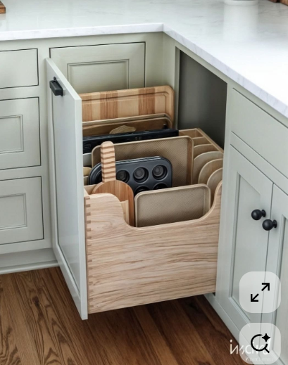
Daily fruit stays in a removable 13.2-inch bowl at the prep-side end of the main island. In the first food bay after the separate cleaning bay, two removable 16 W x 10 D x 5 H-inch open-slatted produce baskets sit on the 27.6-inch shelf; an 18 W x 10 D x 9 H-inch bread box sits on the 43.2-inch shelf above. These replace decorative contents, not cabinetry. Select food-safe, cleanable containers; the bread box has rear ventilation slots. Keep refrigerated fruit in the refrigerator and food separate from cleaning supplies and the opposite-end robot dock. See Prep shelves or Kitchen. Product selection and shelf loads remain unverified.
Kitchen sink facing the windows — reference example.
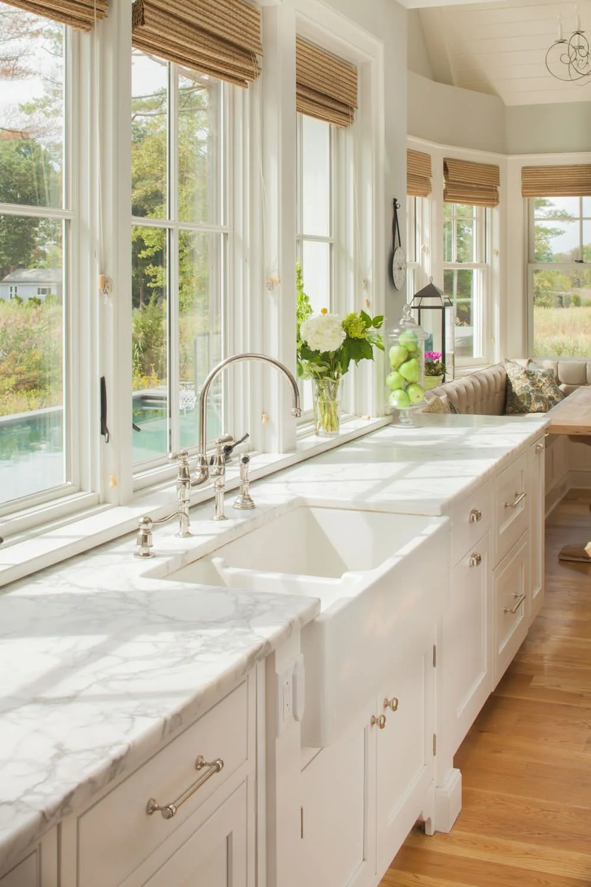
Pull-out trash + recycling cabinet — reference example.
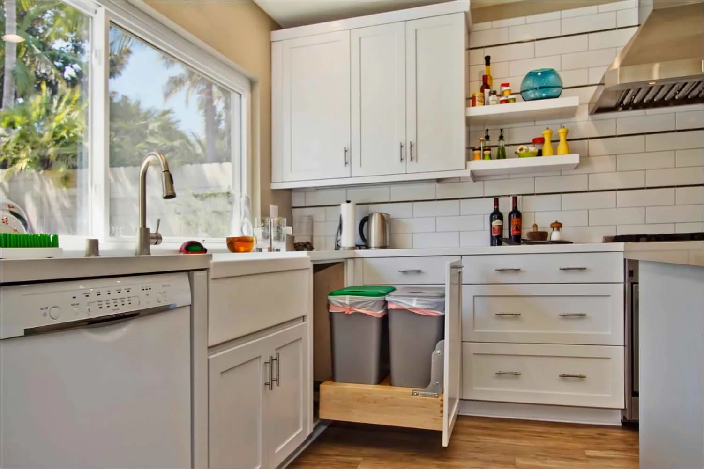
Under-sink pull-out storage for cleaning supplies — reference example.
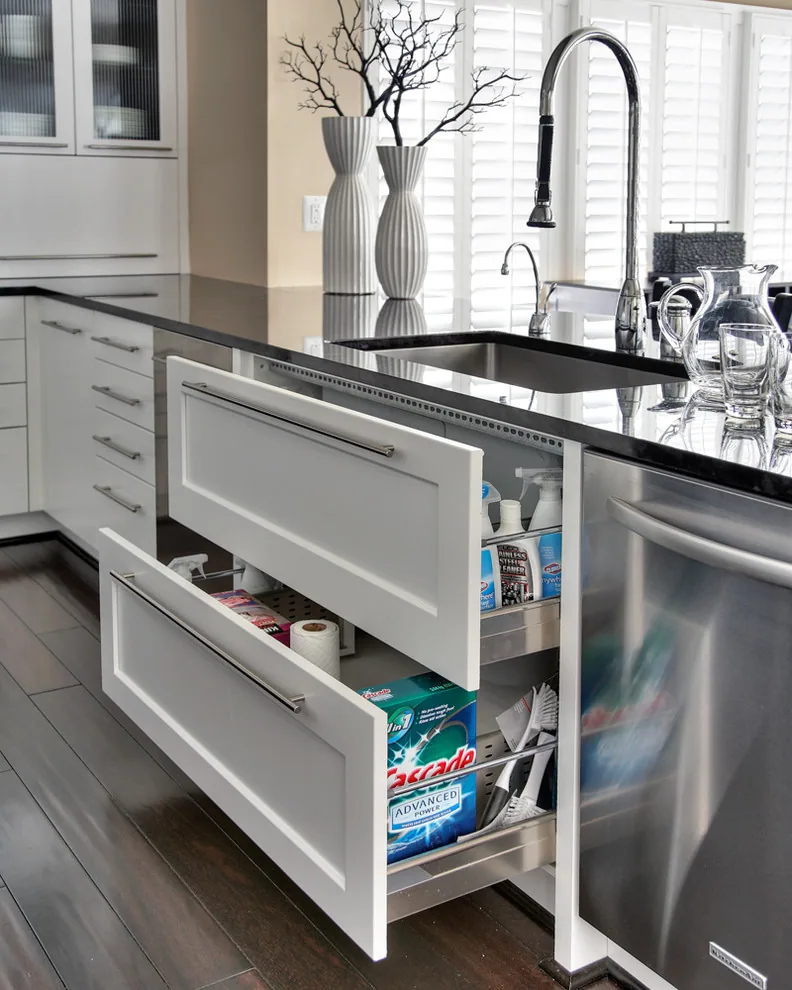
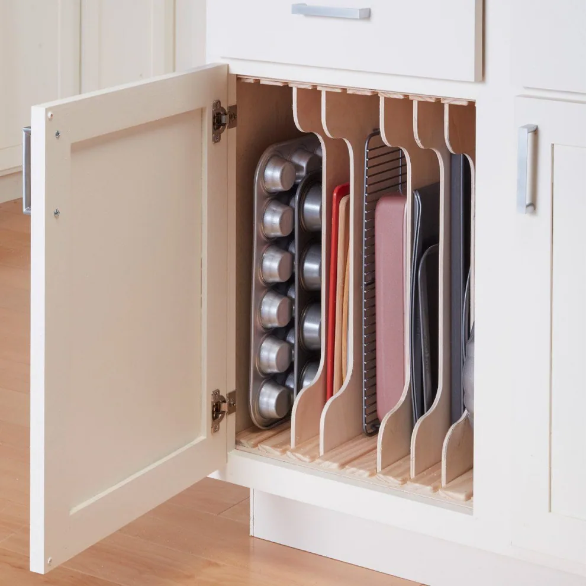
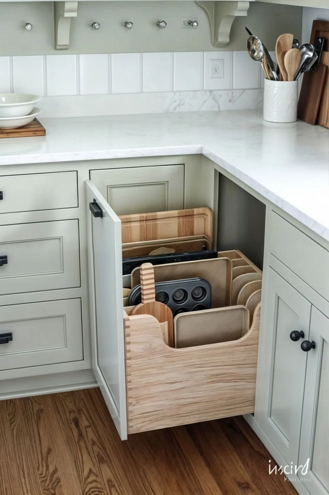
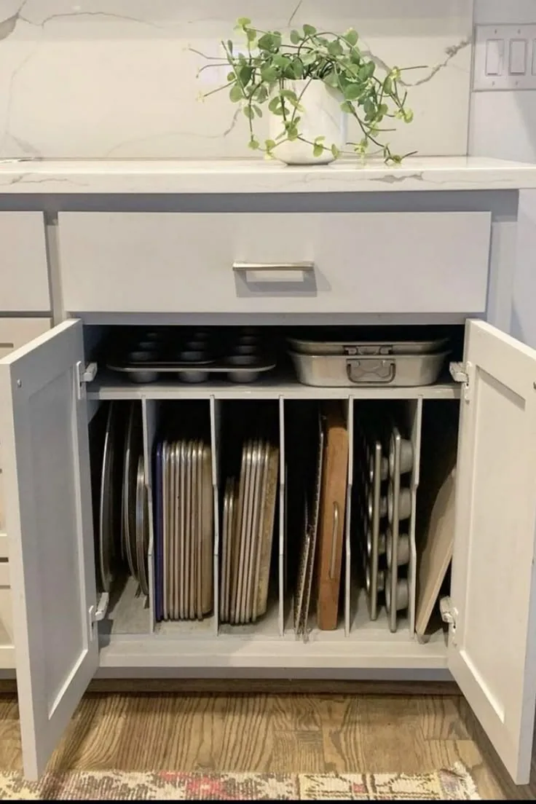
All cabinets throughout the home: light natural-stained white oak, Shaker doors and drawer fronts, frameless boxes with full-overlay fronts, and satin-gold handles. Apply to the kitchen perimeter, island, tall pantries, prep kitchen, mudroom cabinets, bathroom vanities, and other closed storage. Keep visible wood grain; confirm stain, sheen, and hardware on physical samples. Open shelving and appliance finishes remain unchanged.
Main-kitchen, island, and prep-extension drawers use Top Knobs M2223 Dakota Charlotte cup pulls in Honey Bronze: one centered pull, or a pair at the quarter points on drawers 30 inches or wider. The manufacturer specifies 3 3/4-inch overall length, 1 1/8-inch height, 15/16-inch projection, and 2 9/16-inch mounting centers. The preview simplifies the cup shape and finish. Keep bar pulls on doors, tall and trash pull-outs, and appliances; verify finish and drilling against a physical sample.
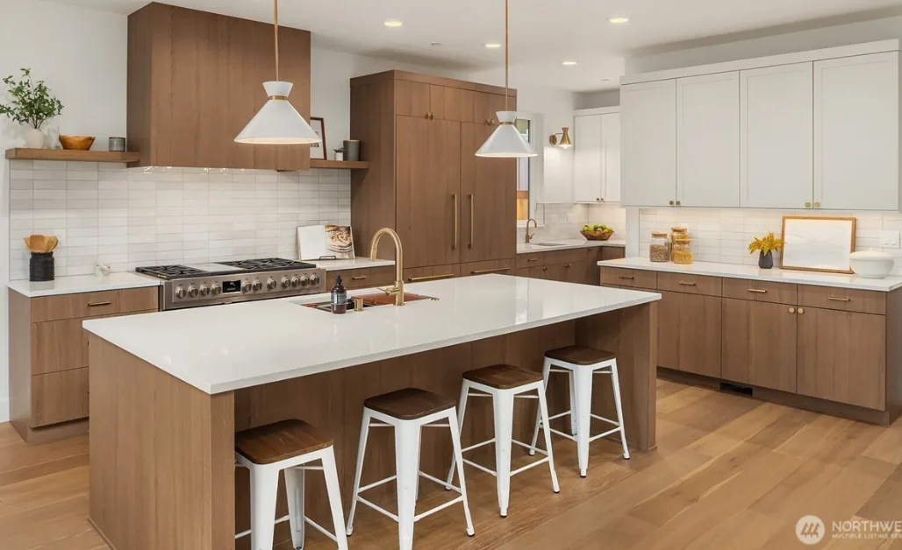
Love the island, lighter tone of wood.
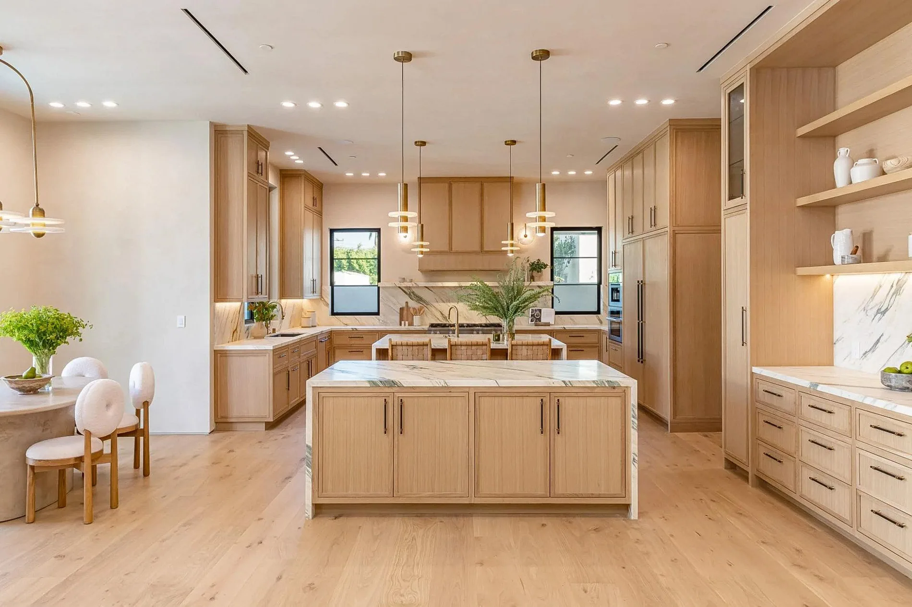
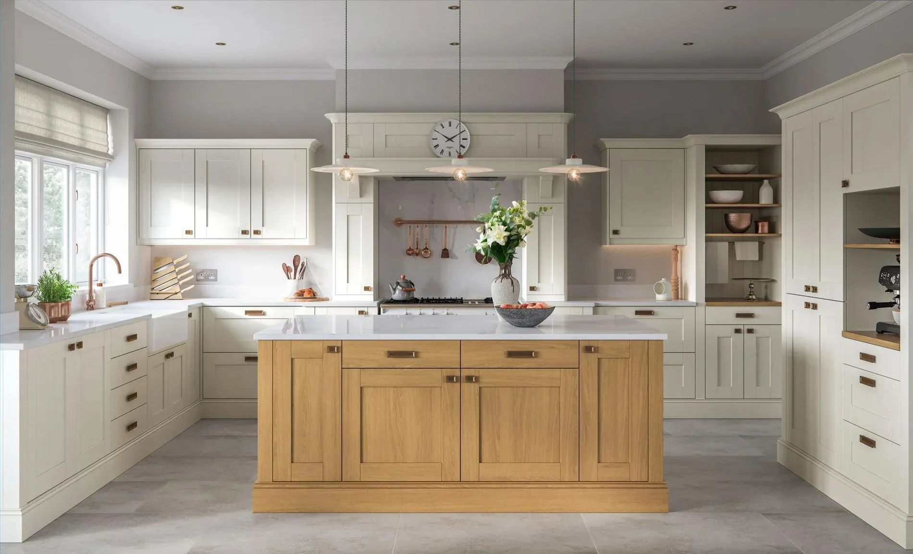
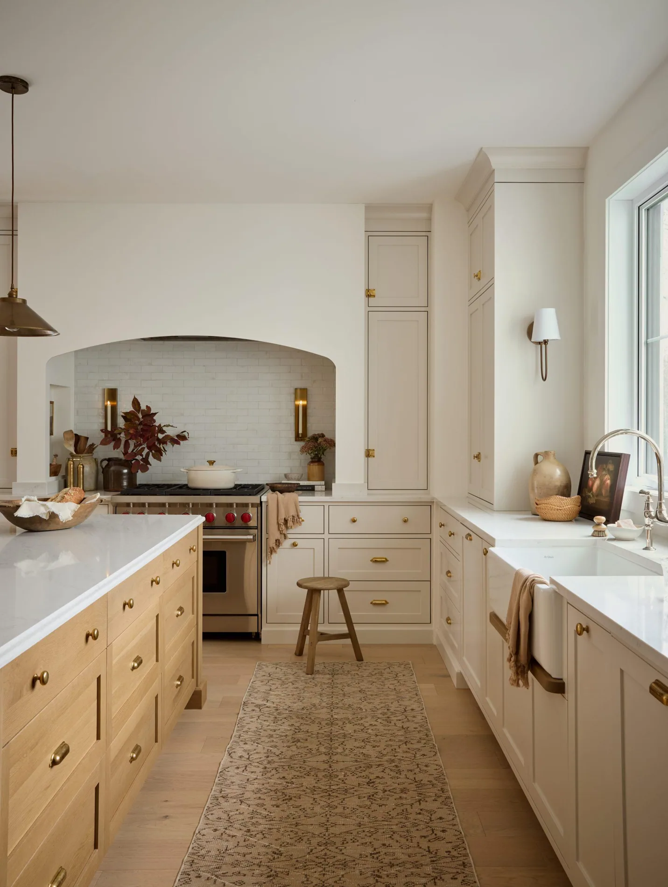
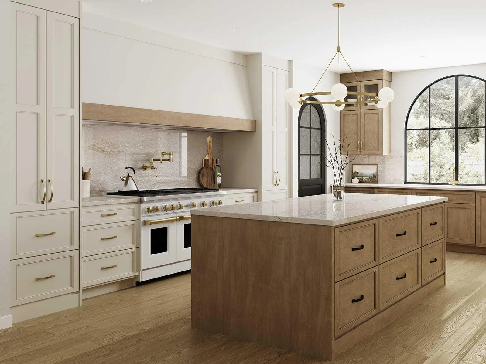
Current window product intent: main/prep banks and end window are White Fibrex Andersen 100 Series, no grilles, casement flankers and fixed pictures. Existing dimensions and nominal study codes are not approved SKUs or joined assemblies; confirm actual-frame/rough-opening sizes, kitchen 18-in flankers, prep 72-in nominal height, mulling, sink reach and safety glazing before ordering. See verified sources and ordering holds.